Modern Mom HQ
The Ultimate Beauty Guide
2027 edition
Simple, current makeup and hair advice for busy moms.
Jaime McLaughlinMakeup artist. Mother of four.
Simple, current makeup and hair advice for busy moms.
Before you start
This is my little golden makeup bag: the how-to, how to pick your color, and the products I actually use and recommend, from everyday faces to weddings. Start anywhere. Keep what works for you.
When advice comes from a doctor’s group or another outside source, you’ll see a small number that points to the sources at the back, and the “What the experts say” boxes sum up what they say. Product details marked “per the page” come from each product’s own retailer page, read on October 19, 2026. Everything else is my own experience as a makeup artist and hairstylist.
This guide is for general information. It is not medical advice. If you have a skin or scalp condition, allergies, or a reaction to any product, stop using it and talk with your doctor or a dermatologist. Some product links may be affiliate links.
© 2026 Jaime McLaughlin, Modern Mom HQ. For personal use. Please do not share or resell. A new edition of my original beauty guide.
Inside this guide
Start here · how to use this guide
Use this guide as a trusty resource, from one friend to another, and let go of the overwhelm.
Chapter 1 of 8
Before You Start
Before any product, a little why and a little how: why getting ready is worth your time, where your money makes the biggest difference, and the skin care that makes everything else work.

Makeup sits on top of your skin. Start there.
The one thing to rememberIf you’re a mom, chances are you don’t have time to stroll along the makeup counters and beauty aisles in peace.
And because our kids are sucking up our budgets with diapers and pacifiers (ugh, those kids), our budgets don’t have much room for high-end beauty buys. So we settle for a messy top knot, jammies most days, and cheap makeup from our quick Target runs on those nights we realize we’re on our last diaper.
Or maybe you aren’t a mom, but a college student with a minimal budget for beauty. Or maybe you do have the budget, but you’re just overwhelmed by the zillion YouTube videos and the 97,000 contour kits, brow kits and lip kits advertised all over social media. Each week there’s a new trend, a new product and a new way to shimmer and glow.
But let me tell you, friend: there is another way.
Have you ever walked into Sephora or Ulta and walked straight back out empty-handed because you simply didn’t know what to buy? Or had the lady at the department store beauty counter match your skin “perfectly” in the store, only to go outside and find you have an orange face? Well, you’re not alone.
After 20 years in the beauty industry, I realized I was getting asked the same questions over and over again. No one knew what to buy, and the market is completely oversaturated, with too many brands claiming to be the best. But how do you know that what you’re buying is actually the best? Or that it will work with your skin? The truth is, you don’t. Unless you spend over a decade investing in makeup and finding products that work, like I have.
From production sets to photo shoots, graduations, weddings and holiday parties, I’ve done it all. And rest assured, my kit is overflowing with products, but to be honest, 90% of the time I only use a teeny portion of it. What that tells me is that a small portion of the products on the market work just as well. The majority of my makeup is “just in case.” How silly is that? Now imagine walking into a beauty store. How much of what’s there do you think you really need in your personal makeup bag? How do you choose a foundation? What the heck is a primer? Where do I put concealer? How many eyeshadow palettes are in here? Overwhelming, right?
What if you could have a list of products that actually work, from an artist who has used them on faces from young teens to seasoned grandmothers? Yes, the same products.
What you have in your hand is my little golden makeup bag: my favorites, my must-haves and my makeup kit staples. These are the products I make sure I never run out of, that I recommend to all my clients and that I’ve raved about for years.
Use this guide as a trusty resource, from one friend to another. Know that these recommendations have glammed faces from the five-year-old flower girl to many high-profile clients. From weddings to family photos, you can trust that if these products are good enough for a pro makeup kit, they’re a solid choice for your own personal makeup bag. It’s time to abandon the overwhelm of all things beauty and step into some knowledge that will equip you on your path to self-confidence!
xx, Jaime
Hair and makeup are some of the most skipped-over, yet effective, habits in a woman’s day. To some, getting ready seems vain or selfish. I challenge you to look at it from a different point of view: getting yourself ready early in the day creates a spark that can carry confidence and productivity into the rest of it.
Your outside appearance does matter. Not because of what people think of you, but because of how YOU feel. And once it’s a habit, you don’t have to think about it anymore. It’s automatic, just like brushing your teeth.
So when you hear that small whisper that this is selfish, unimportant, vain, wasteful or expensive, push it back. If getting regular haircuts and getting yourself ready makes you productive and helps you kick ass every day, then why not?
The full version, with how getting ready fits into real self-care, is in Chapter 6 of my companion workbook, The Woman Beyond Mom.
Why does it all cost so much money? When it comes to beauty products, stylists and the effort you put into this part of your life, you get back what you put in.
I hear the same complaints from women all the time: their hair doesn’t style well or stay styled for long, and their makeup has melted off their face by noon. My first question, if you struggle with this, is: what products are you using, and how are you using them? In my experience, using a product the wrong way, or using a cheap product that doesn’t perform, is often a waste of time and money.
For me, professional-grade hair products and makeup are worth the money. Period. I will say it over and over and over again. They’re an upfront investment, but on the back end, I find they’re better for your hair, they work better and they last longer. Plenty of cheaper products seem like a deal at first, but in my experience you often need more of them, or need to replace them sooner, so you can end up spending more. (Not everything has to be expensive, though. You’ll find some of my favorite drugstore picks in this guide too.)
Your tools matter too! If you know how to blow-dry your hair but your blow dryer is bad, so is your blowout. When you invest in quality tools, they last a long time, and the quality of the work stays consistent. My last blow dryer was $100, and it lasted me seven years. That is 100% worth it to me!
How often do you go to a stylist? If your hair isn’t styling well, if it gets oily fast, if it has no volume or too much volume, or you just don’t like your style (or lack of one), it’s time to see your stylist, or to find a stylist you love. This is one of the most common hair issues women have. My own hair is impossible to style and takes me forever when I’ve missed an appointment or am not going consistently.
Regular haircuts keep your hair in shape, give it texture and keep split ends away. In my experience as a stylist, coloring your hair can change its texture too, not just its color. If your hair is straight, smooth and gets oily quickly, try a color service. It might add more texture and volume!
I’m not suggesting you spend thousands of dollars on beauty products and go broke. I’m suggesting you adjust your expectations to match the results you’re getting. We can’t expect to walk out of the bathroom looking like Kim Kardashian when we’re using grocery store products, never getting any professional beauty services and not investing in skin care. It’s a delicate balance, and it can be done, but investing in products should be a priority if you want specific results.
Before makeup
Makeup sits on top of your skin. When your skin is ready, everything else goes on smoother and lasts longer.
Chapter 2 of 8
The Face
Foundation, concealer, contour, bronzer, blush, highlighter and setting: how to apply each one, how to pick your color, and the products I reach for.

Foundation is called foundation for a reason.
The one thing to rememberFoundation is called foundation for a reason.
It’s the starting point of your makeup application and your look, and it will make or break the look and how long it lasts. When you’re starting or adding to a quality makeup bag or beauty regimen, you want to invest in a quality foundation first. It lets the rest of your makeup “stay put” on your face, without everything melting off or wiping off when you touch someone or something!
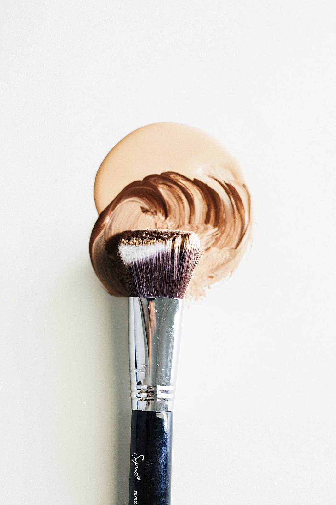
If you don’t want your makeup to wipe off, and you want it to last all day, try a heavier coverage! Heavy coverage doesn’t mean cake face!
There are two main ways to apply foundation. You can use a wet beauty blender, which gives you an even, lighter application (but it’s also buildable). Or you can use a foundation brush. (The brush comparison below walks you through the differences between the brushes and what each one does.) My brush preference is the Sigma F80. This is my preferred method of application! All my brush picks are in Chapter 6.
Most foundations are also buildable, so you can add more as you go. All my brush suggestions are in Chapter 6, The Tools. The big no-no: never use your fingertips or hands. Not only will it give you an uneven application, but the bacteria on your hands could get on your skin and create blemishes and more skin issues.
Flat foundation brush. Should you use this brush? No. This is one of the worst brushes you could use for foundation. The bristles are too tight and close together, and the shape and design of the brush put too much pressure on your skin with the product. You end up with lines and an uneven application.
Stippling or airbrush foundation brush. This “airbrush” foundation brush is the complete opposite of the flat foundation brush. It gives a very light application, but you’ll run into the same issues: an inconsistent application and lines on your face.
Kabuki foundation brush. There are a few variations of this brush, like a flat kabuki and an angled kabuki. I love it because it’s a happy medium between the flat foundation brush and the airbrush foundation brush. It applies the product evenly and blends as you apply it. It’s a great, quick option for a smooth foundation application.
These aren’t the only foundation brushes on the market, but they’re the most popular. My #1 recommendation for applying foundation is the Sigma F80 kabuki brush, with the beauty blender a close second!
Undertone is the color beneath your skin’s surface. It isn’t how light or deep you are. Cool leans pink, red or blue. Warm leans golden, yellow or olive. Neutral is a mix. Use a few tests together, then confirm with a swatch.0,0,0
Check your inner wrist in daylight. Blue or purple often reads cool; green often reads warm. It’s a weak clue, since light and skin thickness change how veins look.
Gold tends to suit warm skin. Silver tends to suit cool skin. If both work, you may be neutral.
Hold white paper or fabric beside bare skin in daylight. Does your skin look pinker or more golden?
Their codes run opposite to what you might expect. In MAC’s own shade finder, NC leans golden and NW leans pink and red.0
Our faces are never consistently the same color. Our skin color changes based on how much sunshine we get and which season we’re in! Naturally, you’ll be tanner in the summertime, and in the winter your skin will be lighter. The best way to avoid mismatched foundation is to buy TWO colors and have both on hand all year long: a lighter and a darker, or a summer and a winter foundation.0
Not only CAN you use both colors all year long, but you SHOULD, depending on your needs. You can custom mix your own color depending on how your skin looks or feels, and you can highlight and contour with both colors (shaping your face with foundation). Each brand has its own range of colors, and they aren’t always going to be a perfect match for your skin! So create a custom color for yourself!
Use the back of your hand as a palette. Squirt out your foundation and mix your colors on the back of your hand. Then apply it to your face with the beauty blender or a makeup brush.
How much the product hides: light, medium or heavy. Pick what your skin and your day call for.
Liquid, cream, powder and more. I like liquid for everyday and cream for photos.
Oily and textured skin does well with matte. Smooth and normal skin does well with luminous.
You can mix finishes and coverages too. Add a drop of a lighter foundation to a heavy one to lessen the coverage, or a drop of a heavy one to a light one to up it. Add a drop or two of liquid highlighter to any foundation for a gorgeous glow. Dry skin? Add a drop of facial oil to a matte foundation.
First off, don’t be afraid of a heavy-coverage foundation! Typically, heavy coverage is best worn in the winter months, or all year round if you have scarring, blemishes or discoloration you’d like to camouflage. If you need your makeup to last ALL day, you need to put enough on to last you all day. It’s very possible to get a natural look with a heavier-coverage foundation. I personally wear heavy coverage all year long.
Heavy-coverage foundation is also great for mom life! I love that I can put on a heavy-coverage foundation and know it’s going to last me all day and won’t smudge or come off while my kids are hanging on me. I can sweat through it and go about my day without a second thought, which is important to me. I don’t want to think about my face all day. I want to look good and then be done with it!
This foundation is one of my personal favorites, and probably my top pick! It works for all skin types and all ages. It’s versatile and long-lasting, and it works for most people. I love it for everyday wear and for daytime events when I need to look good ALL day. One amazing thing is that it lasts ALL day, even into the night. And if you happen to fall asleep in your makeup, chances are it will still be there in the morning! The only downside, in my experience, is flash photography: it reflects and can make your skin look pale in photos. It’s great for acne scarring, oily skin or troublesome skin. It covers great and lasts all day, so you don’t have to worry that it will rub off or come off halfway through the day. If you have dry skin, try adding a drop of facial oil to make it less dry and matte. For a lighter application, use a damp beauty blender; for direct, full coverage, use the Sigma F80. The current version is Double Wear Lightweight Matte: liquid, matte, medium coverage, and the brand lists up to 36 hours of wear.
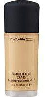
I’d compare this foundation to Estée Lauder Double Wear. It’s similar because of the texture, the creaminess and the great coverage, but it isn’t as heavy or as matte. It’s a great option for ANY skin type! In my experience, it doesn’t oxidize or change color after you apply it, it’s photo-friendly, and it doesn’t settle into fine lines and wrinkles. It can be applied with a foundation brush or a beauty blender; as with the other foundations, a beauty blender gives a lighter (but buildable) coverage. MAC lists it as full coverage with a natural finish.
Full coverage with a radiant finish. NARS lists 16 hours of wear.
Medium-coverage foundation is great if your skin is in great condition but you want to even out your complexion and look more done up day to day. Some of these are considered full coverage by the brands, but after using them for events, on clients and on myself, I consider most of them medium coverage.
Medium, buildable coverage with a radiant finish. The brand lists up to 12 hours of hydration. Vegan and cruelty-free.
Notice that I didn’t call these light-coverage “foundations.” That’s intentional. The next few products give a minimal amount of coverage, which is great for everyday wear when you aren’t “going out.” They’re also great for a day at the beach or by the pool, when you want some coverage but don’t want to look too made up.
This wouldn’t be my first pick for an event foundation, but for everyday wear, it’s great! The coverage is gorgeous, but it feels ultralight, and it evens out skin tone. Light coverage with a radiant finish.
Light, buildable coverage with a radiant finish. Hydrates and evens tone.
A lightweight skin tint with a glowy finish and breathable, buildable coverage. Part of my current makeup bag.
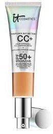
This wouldn’t be my first pick for an event foundation, but for everyday wear, it’s great! The coverage is gorgeous, but it feels ultralight, and it evens out skin tone gorgeously. Only buy one of these, not two colors. It will oxidize as you wear it, which means it darkens. The brand calls it full coverage, with SPF 50+.
Medium-to-full coverage with a natural finish, and SPF 30 per the page. 15 shades.
A tinted cream balm with a radiant finish that warms and evens skin tone.
You can mix and match any foundations. If you love the Estée Lauder full-coverage foundation but don’t want as much coverage one day, try adding a drop of a light tint to dilute it a little.
Concealer is simply a heavier-coverage foundation that you use to cover imperfections and even out your skin tone.
Your concealer can be the same color as your foundation, a lighter shade to brighten under the eye, or even a color-correcting concealer to help cancel out unwanted dark spots and colors on the skin and under the eyes.
When concealing under the eyes, the best way to apply it is to create a triangle shape under the eyes and then blend upward.0,0 Always set your under-eyes with a powder to lock in the concealer. (More on this in the setting powder section.)
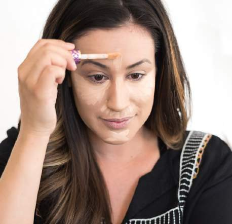
There are two great ways to apply and blend out your concealer. I usually use my finger to get the product onto the skin (if it comes in a pump bottle). Then I blend it out as described below.
A brush or a beauty blender are both great ways to do this. I try to minimize the number of brushes and tools I have, and that my clients have. We like simple around here! So our go-tos are the Original Beautyblender (using the pointy tip) or the Sigma F80 flat kabuki foundation brush. Use the small, pointed end of the beauty blender to get close to the bottom lash line, and dab your way up toward your eye from under the eye.
When choosing a concealer, my recommendation is to go lighter than your skin color. MAC has two different bases, NW and NC. One is warmer and one is cooler. (In MAC’s shade finder, NC leans golden and NW leans pink and red.) I ALWAYS recommend an NC. (Example: my color is NC20.) I have NEVER used an NW on a single person in my 20 years as a makeup artist. The goal is to brighten under the eye and make you look more awake, and to conceal any imperfections. The NC does a great job at this!
One of the most common concealer mistakes is the placement under the eye. Most people apply a small amount in a line directly under the eye. This actually makes your dark circles more noticeable. By extending the concealer lower, in a triangle shape, you brighten and highlight the under-eye area, and it blends more easily into your foundation.
Dab a generous amount of concealer under your eye with your finger first. Apply it in a triangle shape underneath the eye. Then drag a small amount down the bridge of your nose, around your nose and a little on your upper lip. Use it as a “highlighter” to brighten certain areas of your face!
Liquid, medium coverage, natural finish. Made with caffeine for the look of puffiness and dark circles. Part of my current makeup bag.
It’s thick and creamy, but it sets well and has less sheen than some. I love setting it with a translucent powder, and it honestly lasts all day and doesn’t crease! Full coverage, 34 shades, and it covers the look of dark circles, redness and hyperpigmentation per the page.
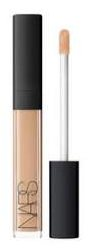
This is another great basic concealer. It’s less pigmented and more dewy than some, and it’s best set with a powder. Medium, buildable coverage with a radiant finish. 30 shades.
Full coverage with a natural finish. The page lists it as water-resistant and crease-resistant.
On my list.
There’s a lot of confusion about the difference between bronzer and contour. But rest assured, they’re really similar and do a similar job. A contour is typically a matte powder or cream that’s cut into the cheek, down the sides of the nose (a more advanced application) and on the top of the forehead. Bronzer is dusted in similar areas, but it’s made of more terracotta-based colors that give your skin a glowy, tan color. Most of the time, bronzers have some sort of shimmer in them to create a glow, but there are matte-finish bronzers available as well.
I typically use both, depending on the look. If I’m doing a natural look, I stick to a little bronzer to simply give myself a glow. But most days I like a full-coverage, heavier look (one that will last me all day long, through work and kids), so in that case I layer a contour and a bronzer.
Bronzer should be dusted on the cheekbones and on the top of the forehead. Contour should be cut into the hollow part of the cheek with a little bit of a heavier hand. It can also be applied on the top of the forehead at the hairline, and down the sides of the nose to shape the nose as well.
If you have a powder you love, you can buy your color (or a lighter color for highlight), and then also a dark color to use as a contour and bronzer. It’s like creating your own contour kit with powders you already love and use!
If you have a foundation you love, you can buy a darker shade and use it as a cream contour! This lets you customize the shade and how dark your contour is. Estée Lauder Double Wear is a great one for this: it lasts all day, just like the foundation, and it blends really well! Then you can pop a little bronzer on top to finish it and set the liquid!
The colors I’ve listed are good for most skin types, but as always, try them out and see how they work with your skin. I’ve personally used these bronzers on all skin types. If you’re seeing too much of an orange undertone, try contouring underneath, or use only a contour rather than a bronzer. These are basic bronzers that work for lots of skin types! Swatch them on your jawline in daylight, just like foundation.
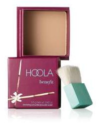
This is such a great, basic bronzer: matte, smooth and perfect for light to medium skin tones. They’ve come out with a light version and a few others, but I prefer the original Hoola! Buildable and blendable, in 7 shades, and the brand lists up to 12 hours of wear.
Pressed powder, matte, medium coverage. 9 shades, and the compact is refillable.
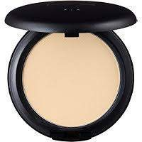
MAC powder is another great option to use as a matte contour. Plus, it sets and stays on your foundation really well. Simply choose the darker shade you feel comfortable with. It can be a couple of shades darker for a minimal contour, or a much darker shade for a more dramatic contour.
A cream stick with light, buildable coverage and a natural finish. In my current makeup bag, in the shade Leo.
A dual-ended cream stick with a natural matte finish. Buildable. In my current makeup bag.
A liquid with a pump for all-over warmth and a wand for targeted shaping. Light coverage.
A liquid contour wand with a natural finish. The page says it blends over makeup without creasing.
Also on my list: Makeup By Mario SoftSculpt Bronzer, Makeup By Mario SoftSculpt Shaping Stick and Beautiful Skin Sun-Kissed Glow Cream Bronzer.
Blush may seem old school to many, but the combination of blush and contour or bronzer is important!
While bronzers and contours create dimension, blush adds a more lively color to the face. Illuminator is simply a “shimmery powder” that you apply to your cheeks, and it gives you a really pretty, healthy glow.
Blush should be applied to the apples of the cheeks and then dusted back slightly toward the ear. Illuminator goes just above that, where the bronzer and blush were applied, to highlight the upper part of the cheek where the sun would hit it. Cream blushes and illuminators should be applied with a wet beauty blender.
The blush color will depend on the day, the event and the season. I love a good peachy color for summer and spring, and a really pretty wine color for winter and fall. The blush I wear every single day, all year round, is MAC’s Love Joy. I love this color because it isn’t too bright, and it blends really well with bronzers and contours. It brightens the contour a bit and makes it more lively, but it doesn’t add so bright a color that you feel like a clown. You can control how your blush looks by how much pigment you allow onto your brush. A little goes a long way! When choosing blushes, I try to keep them fairly simple and neutral.
Try using a cream blush with a beauty blender. Once you’ve applied foundation, dip your beauty blender in a cream blush and dab it onto your cheeks. It gives you a really creamy, natural flush and helps balance out a contour or bronzer color that’s dusted on the cheeks.
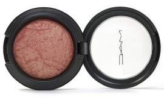
This is my #1 recommendation for a blush, and the one I wear every day, all year. I use it along with contours and bronzers. It deepens the contour with a more lively hue. This blush is great for everyday wear and events! A warm mid-tone brown with gold pearl.
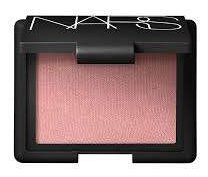
This is a great option to brighten up the face a bit! It’s a pretty peachy pink (NARS adds golden shimmer) and will look great on light to medium skin tones. Perfect for the apples of your cheeks!
Powder: blendable and long-lasting. Stick: radiant, medium, buildable.
Liquid, medium coverage, radiant and matte.
Light, buildable cream stick. In my makeup bag in Bespoke.
Illuminators, or highlighters, are used to highlight areas like the top of the cheekbones, down the bridge of the nose and on the cupid’s bow (above the lips).
This makes those areas more pronounced and gives them a nice glow!
Powder illuminator should be applied with a brush. Liquid or cream illuminator should be applied with a damp beauty blender. Both types of products can be applied in the exact same areas and will do the same job! The type you choose is based on preference.
My recommendation is to pick one that will work all year long. There are many variations, but I find that a champagne color has the most warmth without being too gold, so it works for most skin types!
Try a cream over a powder with a damp beauty blender. It will give you an extra glow without your skin feeling too dry or caked on!
I LOVE to add a drop or two of a liquid highlighter into any foundation. It gives the skin a gorgeous, natural glow and helps the foundation not look so matte or dry! A powder illuminator also looks gorgeous in the summertime when it’s dusted on the chest and collarbone area.
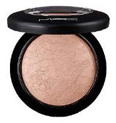
This illuminator is very subtle, and yet a neutral color that goes great on most skin tones. I use it all year round on the top of the cheekbones, down the bridge of the nose and on the cupid’s bow of the lip. MAC describes the shade as a gilded peach bronze.
The page says it illuminates and visibly smooths the appearance of skin.
A liquid illuminating gel with a radiant finish. Use it as a highlighter or a blush. 6 shades.
There’s always confusion about where to put what when it comes to cheek color. And the truth is, all three products make a big difference.
Not enough contour or bronzer makes the face look rounder, but too much makes the face look dirty. Product placement is key in shaping your face. See the map.
This is a common question among mamas who are a little overwhelmed by how many options there are. Both bronzer and blush are used to add color and definition to the face. Both are meant for the cheek area (although bronzer can be placed on the bridge of the nose and the top of the forehead to “tan” the face a bit). Bronzer generally has a “brownish” color to tan the face, and blushes tend to have more color, to give the look a more flushed appearance. Highlighter attracts light and makes those areas stand out. So putting highlighter on the cupid’s bow of the lips makes the lips look plump and gives them a nice pout. On the cheekbones and down the bridge of the nose, it makes those areas more prominent and helps shape the face.
Set your base so it lasts through school pickup and soccer practice.
Setting powder should be applied underneath the eyes, on the forehead, down the nose, on the upper lip and across the jawline. Setting powder shouldn’t be applied all over the face. There are two options for applying it: a damp beauty blender or the Sigma F35 tapered highlighter brush.
Setting spray is sprayed on after all your makeup but before mascara, or a few minutes after all your mascara is dry. The full order of application is in Chapter 7.
The setting powder can be a little lighter than your skin tone (similar to your concealer color), and more on the translucent side, or completely translucent. Since you’re using it mainly where you placed your concealer, it brightens those areas slightly. If you’re wearing less makeup, without concealer, pick a color that matches your foundation.
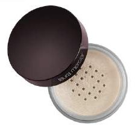
In my opinion, this is the #1 best translucent setting powder on the market. It sets any makeup great, it has no color to it (if you buy the translucent one), and it doesn’t make you look too matte. I suggest buying the smaller one. The large container is too big, and you won’t go through it fast enough before it gets old! Soft matte, 16-hour wear per the brand.
This powder has more coverage than a translucent one, but it still mattes down any shine and sets your makeup well! It shouldn’t be placed over highlighter, blush or contour. It’s best on the T-zone, under the eyes and around the lips.
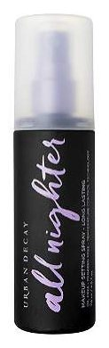
I love this setting spray, and I really feel like it makes a difference in the longevity of your makeup. It’s also a nice refresher if it’s warm outside! I tend to put it on before all my makeup as well. Use both setting powder and spray! An ultra-fine mist with a natural finish, and the brand lists up to 24 hours of wear.
An ultra-fine mist, natural finish, alcohol-free and fragrance-free. The brand lists up to 16 hours of wear.
Chapter 3 of 8
The Eyes
Primer, shadow, liner, mascara and false lashes. You don’t need 97 shadows. You need one good palette and a few habits that keep your eyes healthy.

One palette is plenty.
The one thing to remember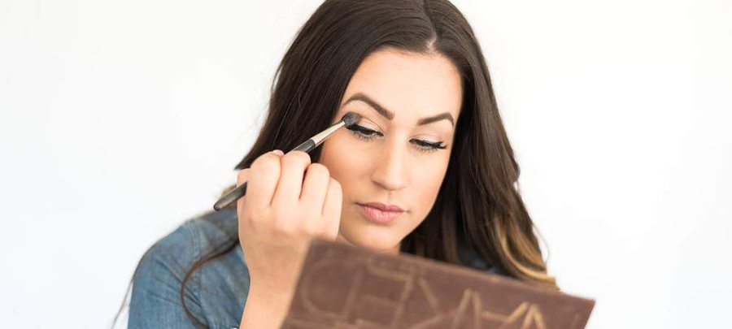
This is a really important step.
It ensures that your shadow sticks well and your makeup doesn’t run down your face. I love the primer below because it isn’t sticky. It’s a really pretty, creamy lid color that neutralizes your skin tone and lets your shadow stick to the cream, so you don’t lose a ton of your pigmented shadows. This also extends the wear of your shadows!
I suggest applying it with your finger. A quick swipe over your eyelid is all you need. No need to stress or fuss over extra makeup brushes, and it’s a cream, so it will blend easily.
These selections work for most skin types, but you want your shadow base to be flesh-toned. It shouldn’t add too much color, but it should even out the color of your eyelid.
This is my everyday shadow primer. I actually mix two colors: one as an all-over lid color, and one as a contour in my crease line before I put my shadow on. My two favorite colors were Persuade and Earthen. It’s a twist-up crayon that now comes in 3 shades: Ignite, Persuade and Bubbly. The page lists 8+ hours of wear and says it boosts shadow color and hold. Earthen isn’t listed on the brand page now, so check the shade names when you shop.
I’m a firm believer in neutrals. They can take you so far in your makeup game.
You don’t need 97 different shadows to switch up your looks. You need a palette. One palette that gives you a few good options: some simple neutrals to throw on during the day, and some sultry chocolates and mahoganies to cut into the crease for an evening look.
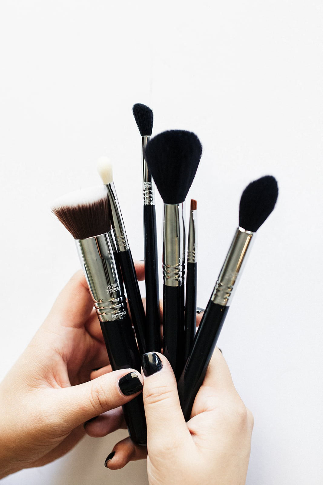
After you’ve applied an eyeshadow base, I recommend putting a nude or flesh color all over the bottom part of the lid. This way, as you cut more color into the crease, it blends with the flesh tone to give a softer look, and it all blends well together. You can slowly start increasing the color by adding more pigment to your brush or putting more pressure on your lid with the brush. Use a back-and-forth motion and blend out, since most of the pigment has already been placed on the eyelid. I don’t recommend putting too much shadow above the crease, and you want to stay away from right under the eyebrow.
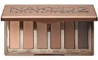
A smaller palette, but it has very pretty matte neutrals. It’s a good beginner palette, and great for travel! Six matte taupe and nude shades, and the matte shades can also fill in your brows.
Two 12-shade matte palettes. Buildable and blendable, with minimal fallout.
Pillow Talk has four shades with matte options, non-creasing per the page. Super Nudes has six satin-matte shades with a creamy, velvet texture.
Swipe and blend, matte or soft shimmer. The page lists crease-resistant and waterproof. In my current makeup bag in Chestnut.
My pick is Painterly, the perfect neutral for light/medium skin tones! It comes in a little pot and will last you SO long. Cream shadow in 13 shades. The page lists 24-hour wear and non-creasing.
A shimmer cream shadow. The page lists long-lasting and non-creasing.
A no-tug gel pen to brighten and open the eyes.
Liner can be tricky. And it’s not always necessary.
There are many days I go without any liner. But in general, a little bit of liner really can change and enhance the shape of your eye. I personally have smaller eyes that are closer together, so by adding a little wing on the outside of my eye, and then a thinner line that hugs my lash line, I’m able to make my eyes appear a little farther apart and bigger than they actually are. That makes my face feel a little more balanced.
I’m a firm believer in liquids and gels. Black pencil liners always smudge, so stay away from those, but the other options, like a brown pencil, a powder or a color stick, are all great subtle options if you don’t feel comfortable with a winged eyeliner!
Always work from the outside in. Little bits at a time, until you’re confident enough to swipe across the whole lid! (Yes, you will get there!)
You can use any neutral or darker shadow as an eyeliner. Using it dry on an angled brush gives you a soft, diffused look. You can spray the brush with setting spray first and then dip it into the powder to create a more pigmented look. With a damp brush, you’ll pick up more product and get a more defined line of color on your eye.
Your color choice will depend on how much makeup you want to wear, or what it’s for. A dark chocolate or espresso color can take you pretty far for everyday looks. But for a winged liner or a more defined liner, go for the black!
The American Academy of Ophthalmology says to apply eye makeup outside the lash line, away from the eye.0
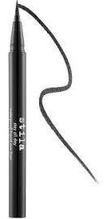
This one is really great: it lasts all day, and it’s easy to apply! It has a fine, marker-like tip, and the page lists it as waterproof, transfer-proof and smudge-proof, in 8 shades.
A super skinny felt tip with a matte finish. The page lists waterproof and 12-hour wear.
A silky, blendable pencil. The page lists it as ophthalmologist-tested and safe for contact lens wearers.
I’m obsessed with mascara primers.
A lash primer is a great option to bulk up and lengthen your lashes, and it will go under any one of the mascaras below!
Waterproof or not will be your preference. I prefer waterproof because I have 9 million kids, and I don’t want to worry about my makeup once it’s on my face. Any waterproof mascara is harder to get off, and you need to be gentle with removal, but if you want a mascara that will stay in place, choose a waterproof one!
If a wand holds a lot of product, make sure you remove some before applying. Simply scrape the wand against the opening of the tube, and it should scrape off the excess.
The American Academy of Ophthalmology says to throw away eye makeup after three months, never share it, and remove all eye makeup before you go to sleep.0,0
My lash primer pick. The page says it boosts mascara length, curl and volume.
Lifts, lengthens, curls and volumizes every lash type per the brand. In my current makeup bag.
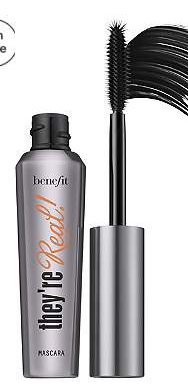
This mascara has a smaller bristle brush, but it will get your lashes so long and full! It also lasts very well. The page lists smudge-proof and flake-free.
This mascara totally lives up to its name. It makes the lashes look so long and gorgeous, as if I (or my client) were wearing false lashes. This one isn’t waterproof, but it stays on so well!
This is the mascara I recommended to my grandmother! (Insert embarrassed emoji because of the name.) But it truly is amazing. Not waterproof.
This is the most basic mascara of all the options: a really basic, fluffy brush that will give you good length and volume. There’s a waterproof and a non-waterproof version, so that will be your preference. The one on my list is the washable version, which isn’t waterproof.
Two more Tarte options: Big Ego is flake-free and ultra-black, and Tartelette Tubing (travel size) is flake-free and smudge-proof.
Great for events. Not an everyday step.
False lashes add length and thickness and give your eyes a pop. I reach for them for events.
The American Academy of Ophthalmology says to wear false lashes for special occasions only, and to see an ophthalmologist right away if you feel any discomfort. Remove all eye makeup, lashes included, before bed.0,0
These are great cheapies. You can get a 4- or 5-pack at most stores, Target and even Walmart. They add length and thickness to your lashes. These are great for events.
This is another great option for events. Thicker than the Demi Wispies, and it will give your eyes a huge pop!
I love the Sephora Collection. These are more expensive, but they last for multiple wears. I prefer the Quill set: light and fluffy, but they still add length and thickness.
This is the BEST eyelash glue, in my opinion. The squeeze tube is the original one, which works great, or you can use the brush-on applicator for precision! Same product, different packaging, based on your preference.
For removal: gently peel them off, starting at the outer corner.
These are my picks from the original guide. Check your retailer for current availability, since I couldn’t confirm each of them.
Chapter 4 of 8
The Brows
Brows frame your face and balance out everything else. Here is how to fill them, how to map their shape, and the products that make it easy.
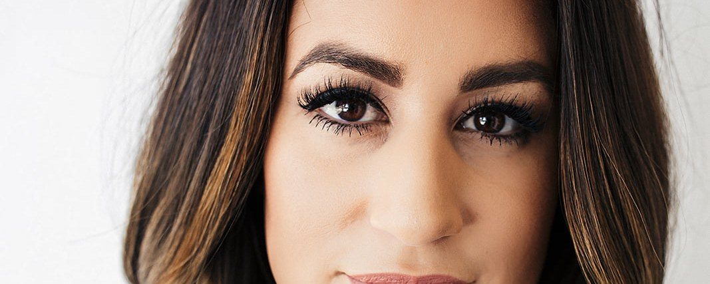
Your brows are sisters, not twins.
The one thing to remember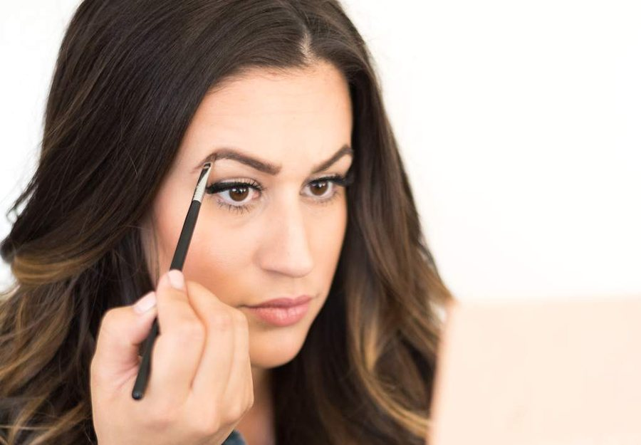
Girlfriend, your brows are sisters, not twins.
Too cheesy? Sorry. But for real. Don’t stress about having them match perfectly, because they never will. The goal here is to shape them, fill them in and frame your face. This is another important step that will balance out your face.
There are a TON of options out there. But the three basic options are a pencil, a gel or powder, and a gel with a mascara wand.
The application will depend on the product you choose. Some have a wand similar to a mascara, and for some you’ll need an angled brush. You want to start slightly in from the front of the brow, rather than right at the front, to avoid any harsh lines. Use small strokes to recreate a hairlike application, and work your way to the end. If you’re using a powder to fill in your brows, finish with a clear brow gel to set them for the day.
There are quite a few shades, but go a little darker than your hair color. You do have to be careful not to go too dark. That’s when the “Sharpie brows” come into play, and you don’t want that look! This will take some trial and error, and it will depend on which product you choose.
Generally, unless you’re Kim Kardashian or blessed by the eyebrow gods, your brows are too short. I extend my clients’ brows 99% of the time. If you aren’t comfortable shaping your brows, start by just filling them in. As you get used to a darker, more defined brow, you’ll feel more comfortable reshaping them to your desired shape and length.
The basics of brow shaping. Use a brush or pencil as your guide.
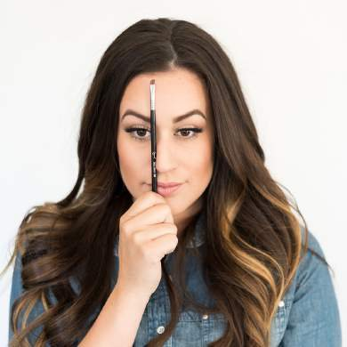
Use a brush as a guideline. Place the brush next to your nose and point it straight up. That’s where your brow should start, at the middle-to-outside part of the brush, toward the middle of your face.
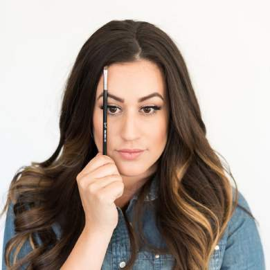
Now move the brush over to the outside of the iris of your eye as you look straight ahead. That’s where the main part of your arch should be. (It will vary slightly, but it’s in that vicinity.)
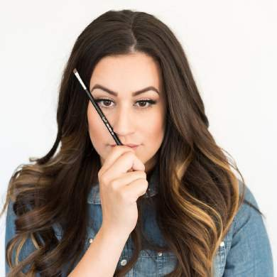
Now move the brush and point it out toward the edge of your brow, so it’s touching your nose and just under the outside of your eye. That’s where your brow should end.
Experts differ a little on where the arch sits. Some line it up with the outer edge of the iris, others with the pupil. Use this as a starting point, and go with what looks natural on you.0,0,0
Your eyebrow hair grows in different directions on the brow. Your brush strokes should follow this hair growth. Short, small brush strokes will make the product look like hair, rather than a sharp, harsh line or a “Sharpie brow.”
Use a Sigma fiber brush as you apply your eyebrow product to diffuse the product and soften the look.
Take my Eyebrow Masterclass, which teaches you:
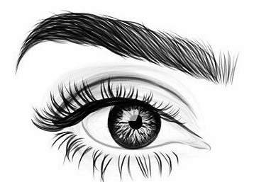
Fill, shape and hold. You only need one or two.
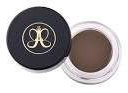
This is the most overwhelming of all the brow products, but only because there are SO many different shades and undertones. But once you find your correct color, you’ll LOVE this product. It stays on so well, gives you a nice defined brow and works perfectly with the angled brush! 11 shades, waterproof per the page.
A brush-tip pen with a 0.1 mm tip for hair-like strokes. The page lists up to 24 hours. In my current makeup bag.
Two shades in one compact for a natural ombre. Sheer to medium coverage. In my current makeup bag.
Brow Wiz is an ultra-slim retractable pencil in 14 shades. Brow Definer has a triangular tip to define, fill and detail, plus a spoolie.
A pomade pencil with a two-in-one tip. Water- and smudge-resistant per the page.
A gel that lifts and holds brows for up to 24 hours, with no sticky residue per the page. In my current makeup bag.
A clear wax with extreme hold and a natural finish.
A clear shaping wax with long-lasting hold.
An angled flat brush with a fine edge for a soft, natural brow.
Also on my list (details not confirmed): ABH Brow Pen and Lifted & Defined Brow Duo.
Chapter 5 of 8
The Lips
Lipstick finishes in plain English, my everyday neutrals and a red that works, plus the primer, liner and gloss that make them last.
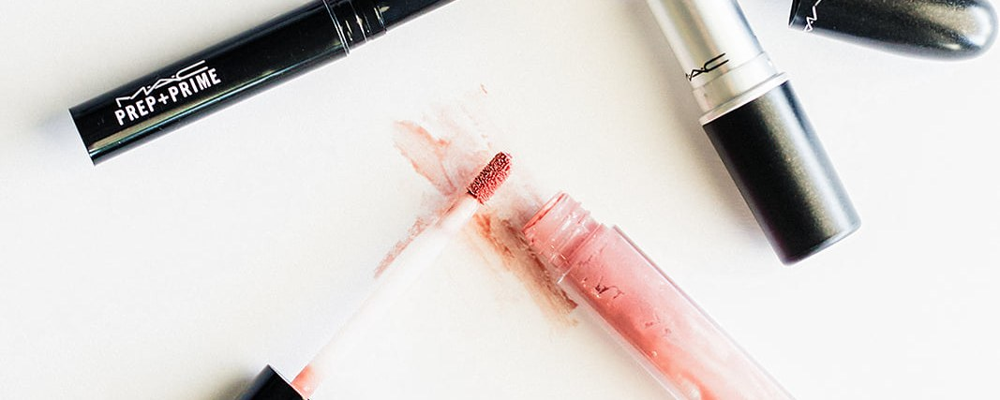
Pick the finish first, then the shade.
The one thing to rememberPick the finish first, then the shade.
It has a little gloss in it. Great for everyday wear.
Lightweight with a sheen, and not as pigmented as the mattes.
No sheen. Best used with a lip primer, so it doesn’t dry out your lips.
No sheen and long-wearing, but wear it with a lip primer or it will fade and dry out your lips.
Muted neutral pink, with a little gloss in it. This is a great everyday wear! I love it for brides and daily wear. It’s subtle, not too pigmented and works great on many skin tones! (It was a Cremesheen in 2019; it’s now in MAC’s Sleek Satin line, which has 36 shades.)
An iconic, dreamy nude pink. This is a very popular color (similar to Modesty from MAC). It’s a more pinky nude, and it’s beautiful for everyday wear or events! The page describes a matte “cashmere” finish.
A lightweight, sheer, high-shine lipstick. Not as pigmented as a matte. 35 shades.
Ultra Suede is a long-wearing, soft-focus matte in 20 shades. SuperSatin is a satin in 18 shades.
A very matte, vivid blue-red. This lipstick is super matte and literally the most perfect red ever. It has no orange tone to it, and in my experience it’s perfectly balanced for every skin tone! It’s now in MAC’s Silky Matte line, which lists 12 hours of color-true wear and has 44 shades.
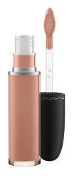
A creamy dirty rose. It’s a matte liquid lipstick, so it has no sheen, and it really does last all day long. You MUST wear it with a lip primer, otherwise it will fade and your lips will dry out! The page lists about 8 hours of wear.
A great product to keep in your makeup kit. Use it under any and all lipsticks if you don’t want your lips to dry out and you want the color to last longer.
Reduces lipstick feathering and gives immediate hydration. Fragrance-free per the page.
Two versions on my list: an Extreme Smudge-Proof pencil (waterproof, matte) and a Long-Lasting pencil (cream formula, matte and shimmer).
A long-wearing matte pencil, vegan and cruelty-free per the page.
A neutral gloss goes with all of the nude lipsticks. You can wear it over a lipstick or on its own.
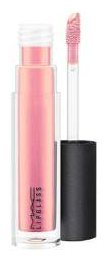
Nyphette, a sunny golden pink, is a thicker gloss with golden champagne shimmer in it. It’s a beautiful bridal or event color, so check that it’s still offered. Lipglass is a high-shine gloss in 16 shades, with jojoba oil to soften and condition.
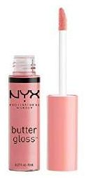
My pick is the shade Crème Brûlée: a super neutral, creamy lip gloss! It goes with everything and can be worn with or without lipstick. A non-sticky, silky gloss in sheer to medium coverage, in 32 shades.
A hydrating, plumping, high-shine serum. Also on my list: MoistureGlow Plumping Lip Color.
Chapter 6 of 8
The Tools
A minimal brush collection for your everyday glam, the sponge I swear by, and the habits that keep your tools, and your skin, clean.
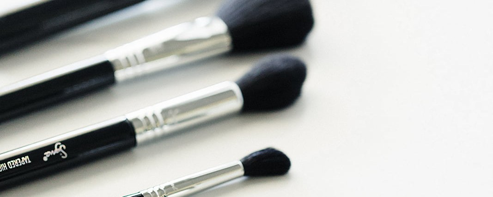
Life is complicated. Beauty doesn’t have to be.
The one thing to rememberLife is complicated. Beauty doesn’t have to be.
These are the essentials: a perfect, minimal brush collection for your everyday glam.
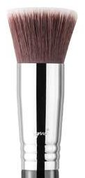
Blends liquid and cream products onto the skin. My go-to for foundation and concealer. The page describes a buildable, airbrushed foundation finish.
Precise placement of powder products.
Dusts on highlight shades. I also use it with setting powder under the eyes.
Softens and blends harsh lines.
Applies and combines shadow shades.
Creates precision lines and strokes. The page mentions lash lines and brow strokes.
The F10 and E25 were part of my original six. I could only confirm the other four on current retailer pages, so check availability for those two.
A big, extra-soft powder brush for a diffused, natural powder finish per the page.
F4 is for foundation and face, F2 and F3 are for powder, F1 is for contour and blush, and EF1 is for cream and powder.
Clean tools, clean skin. A few habits go a long way.
I love the Original Beautyblender. It’s sure to work really well. Make sure to use it damp. Any color is fine; they’re all the same and just come in different colors!0
Normally I prefer the Original Beautyblender, but Amazon came out with budget multipacks that are AMAZING. They sell out often, so keep checking back!
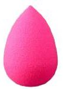
The page says it applies streak-free with little product waste and blends smoothly when wet. Use the pointed tip for concealer near the lash line.
Chapter 7 of 8
Your Routine
Put it all together: the order that keeps every product working, my light and easy everyday face, and exactly what’s in my makeup bag right now.
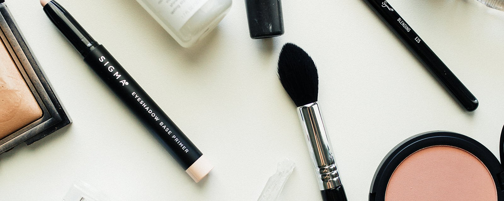
The order really does matter!
The one thing to rememberThe order really does matter!
The order of application is SO important. I’ve found that this order lets each product successfully enhance what it was intended to enhance, and stay on the longest! It also makes sure the products aren’t getting in each other’s way. Follow the steps below, and it should make a huge difference!
| # | Step | See |
|---|---|---|
| 1 | Skin care and moisturizer (let it soak in first) | Ch. 1 |
| 2 | Sunscreen | Ch. 1 |
| 3 | Foundation | Ch. 2 |
| 4 | Concealer | Ch. 2 |
| 5 | Bronzer (and contour) | Ch. 2 |
| 6 | Blush | Ch. 2 |
| 7 | Eyelid primer | Ch. 3 |
| 8 | Eyeshadow | Ch. 3 |
| 9 | Eyeliner | Ch. 3 |
| 10 | Brows | Ch. 4 |
| 11 | Setting powder | Ch. 2 |
| 12 | Lashes | Ch. 3 |
| 13 | Mascara | Ch. 3 |
| 14 | Lipstick or gloss | Ch. 5 |
| 15 | Setting spray (or just before mascara) | Ch. 2 |
A light, minimal and easy everyday look.
The MAC Soba shadow and Pro Longwear Brow Gel are from my original list, and I couldn’t confirm they’re still sold. Any soft matte brown shadow from Chapter 3, and any clear or tinted brow gel from Chapter 4, will work.
Begin with your normal skin care routine and sunscreen.
If you only read one page, read this one.
This is what’s in my bag right now, from my ShopMy page as of October 2026.
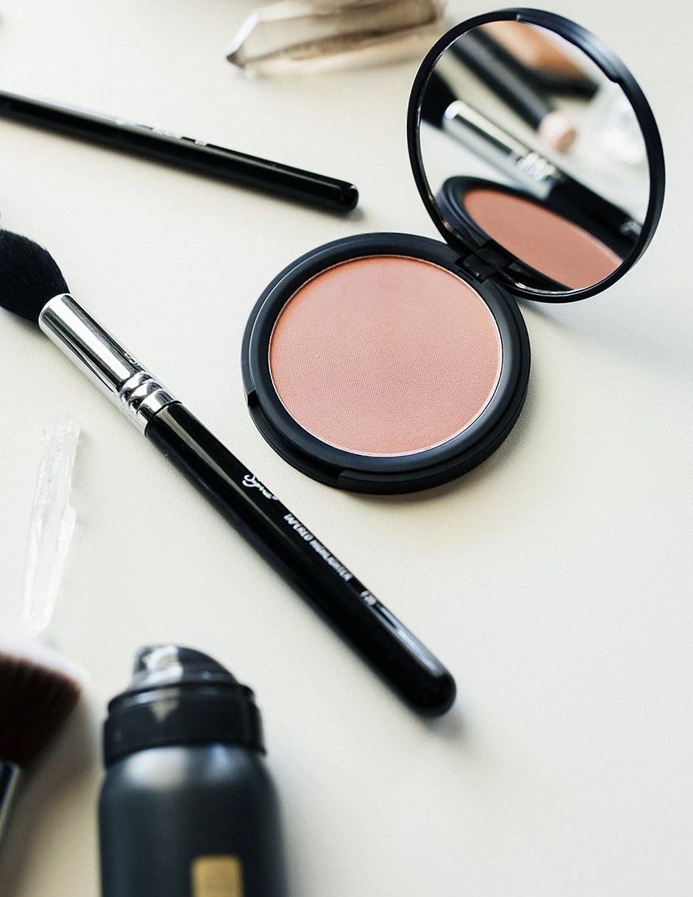
| Brand | Product | See |
|---|---|---|
| L’Oréal Paris | Lumi Le Glow Skin Tint in 200 Neutral | Ch. 2 |
| Makeup By Mario | SurrealSkin Awakening Concealer | Ch. 2 |
| Makeup By Mario | SoftSculpt Shaping Contour Stick | Ch. 2 |
| Merit | Bronze Balm Sheer Bronzer in Leo | Ch. 2 |
| Merit | Flush Balm Cream Blush in Bespoke | Ch. 2 |
| Morphe | Cheek Thrills Face Trio in Honeymoon Suite | Ch. 2 |
| Makeup By Mario | Master Mattes Cream Eyeshadow in Chestnut | Ch. 3 |
| Rare Beauty | Perfect Strokes Mascara | Ch. 3 |
| Anastasia Beverly Hills | MicroStroke Brow Pen | Ch. 4 |
| Anastasia Beverly Hills | Brow Powder Duo | Ch. 4 |
| L’Oréal Paris | Infallible Brow Lamination Gel | Ch. 4 |
Sonia Kashuk Essential Flat-Top Foundation Brush No. 168, Buffing Brush No. 167, Large Eyeshadow Brush No. 264 and Soft Blush Brush No. 180.
Chapter 8 of 8
Hair
A weekly hair rhythm that saves you time, the questions I get asked most, how to choose products for your hair type, and quick fixes for the most common hair problems.

Regular cuts and the right products make every day easier.
The one thing to rememberOne of the common themes in my work is building systems and new healthy habits, and habits are things you do without thinking. Getting yourself ready can be one of them: something that’s planned for and has a space in your schedule.
For me, my hair is thick and takes a long time to do. For years and years, I didn’t do my hair. I was the top-knot queen. I also didn’t get my hair cut or colored regularly. I always loved how my hair felt and looked after a cut and color, but it never occurred to me to be proactive and schedule those appointments in advance so my hair didn’t get out of control. So finally, I pre-booked my appointments and started going every five to six weeks for a haircut instead of every few months. That alone was a game changer for me. I had frequent upkeep, and my hair was easier to style in less time. I had to raise my budget a bit to make room for it, but it made my everyday styling so much more manageable, which made me happy that I could do my hair more often and feel good every day.
Small decisions like regular haircuts sound unimportant next to the bigger issues in life. But my perspective is this: I have choices in my day and in my finances. I’ll never be able to serve anyone well, including my family, if I’m in total survival mode, if I don’t feel confident and if I’m not living up to my highest potential.
A lack of direction in anything will lead you right to failure, and I believe that about big decisions and even the small ones. So I make sure to set aside time to do the things I need to do regularly.
Sunday nights are my more in-depth self-care nights. I spend a good two to three hours in the evening taking care of myself and getting ready for the week. After all, I spend most of the weekend hanging out with my family and setting them up for success: food prep, clean clothes, fresh outfits picked out, menus planned, the schedule accounted for. I deserve a spot in those preparations too!
I usually take a long hot shower, shave, shampoo and condition my hair, and do some extra skin care. Then I take my time and do a really nice blow-dry. This is my rhythm. It sets up my Monday for success, because I feel rested and well taken care of, and I have the energy to sustain my week. It gives me a real pep in my step. Here is my typical hair care routine.
| Day | My hair |
|---|---|
| Sunday night | Wash and blow-dry |
| Monday | Keep it straight, or curl it |
| Tuesday | Curl it, or touch up, plus dry shampoo |
| Wednesday | Touch up, plus dry shampoo |
| Wednesday night or Thursday | Shower and blow-dry |
| Friday | Curl or straighten |
| Saturday | Dry shampoo, and touch up the curls |
| Sunday during the day | Touch up the curls, plus more dry shampoo |
Product is key, and you won’t get the same results without a decent amount of it. The main products that help my hair last longer are dry shampoo and texture powder.
My first suggestion is to use dry shampoo before and after your workout, and then again at night before bed. Once you’re done with your workout, let your hair down and let it air-dry. Later, once it’s dry, you can style it or reset it. If your scalp gets itchy, you do need to wash it more often and use a clarifying shampoo.
The American Academy of Dermatology says dry shampoo absorbs oil but doesn’t clean your scalp, so it shouldn’t replace washing. Relying on it alone can lead to seborrheic dermatitis, an itchy, scaly scalp rash. If itching or flaking doesn’t clear up, see a dermatologist.0
I usually recommend sleeping with your hair down. Styles that pull tight on your hair, like a tight ponytail or bun, can damage it over time. If it bothers you to sleep with it down, keep it loose and use a scrunchie. It will help with harsh lines in your hair, and it’s gentler than a tight elastic.
A 2016 review in the Journal of the American Academy of Dermatology linked hairstyles that pull on the scalp, like tight ponytails, buns and braids, to traction alopecia, a type of hair loss. Loose styles, like wearing your hair down, were low risk.0
Nope. You’ll have to adjust it to your needs, your lifestyle and how your hair behaves. It might take some experimenting and getting creative. But the most important thing is finding the tools and products that simplify your routine and make it last. We want to feel good, but we don’t want to spend all of our days getting ready and grooming ourselves.
If you have thin, smooth, sleek hair, you probably don’t want a smoothing or moisturizing shampoo. It will only add weight to your hair and make it even smoother, which will make it get oily faster. Instead, go with a volumizing shampoo and conditioner, and some texture spray once it’s dry. If you have super frizzy, poofy hair, a volumizing shampoo and conditioner might not be your best bet. A smoothing or hydrating one would be a better option, plus some blow-dry serum or hair oil for styling and smoothing once it’s dry.
Knowing your hair’s texture lets you make a better product choice. Do you have frizzy hair or smooth hair? Do you want volume? Do you want shine control? Is your scalp super dry? These are all questions to ask yourself before you choose a product.
Read the instructions on the product. They tell you exactly how to use it! It may seem like a silly tip, but you’d be surprised how many people don’t read the directions and then use the product the wrong way.
Here is another benefit of having a stylist you see regularly: they start to get to know your hair, and they can give you specific product suggestions, especially if you love the way they style it.
Our stylists are fully immersed in the beauty industry every single day, and if it’s a good salon, they’re getting regular product education. USE that resource to your advantage, and have them teach you and show you which products to take home to help you do your hair regularly.
Investing in a good stylist will make doing your hair so much easier, and it lets you consult with a professional regularly. Once you’re in your regular rhythm of appointments and a weekly hair rhythm, it will be second nature, and something you don’t have to think about!
Shampoo your hair twice, and condition every single time you wash. Don’t ever skip a step (some people skip conditioner for this reason; don’t do that). Try a clarifying shampoo to clear your roots, and make sure you’re moisturizing the mid-lengths and ends of your hair.
What the experts say: the American Academy of Dermatology says to wash oily hair more often, based on how much oil your scalp makes; to concentrate shampoo on your scalp; and to use conditioner after every shampoo, unless you use a two-in-one.0
Use a smoothing shampoo and conditioner, plus another smoothing product for your blowouts, like a blow-dry lotion or a smoothing oil. This will help fight the frizz.
Get regular haircuts, and use a smoothing blow-dry serum PLUS a blow-dry accelerator.
Use a shampoo and conditioner that add volume, use a root booster, and use a round brush when you blow-dry. Once your hair is done, a backcombing spray will add SO much volume and help it stay that way instead of falling flat.
Sources and notes
Numbers in the text point here. Techniques and health advice were checked against these sources on October 19, 2026 (the hair sources in November 2026). Where experts disagree, the guide says so. The product names, shades and notes in my own words come from my experience as a makeup artist.
Product details marked “per the page” come from that product’s own retailer page, read on October 19, 2026. Product details change, so check the retailer for current shades, sizes and prices. Charlotte Tilbury, Makeup By Mario, Maybelline, Tarte Tartelette and Sonia Kashuk pages that couldn’t be read are listed by name only, with no product claims.
About the author
From hair and makeup for red carpets to styling brides and everything in between, I’ve mastered not just hair and makeup, but simplifying hair and makeup.
After 20 years in the beauty industry, I realized there was a huge gap. The internet is flooded with millions of YouTube videos and incredible artists teaching a wide variety of skills, looks and tricks, but none that simplify the process enough to teach everyday women how to manage their own beauty routine without the overwhelm.
So I set out to create online resources that any woman in the world could access at any time. Whether you’re the postpartum mama who needs a little boost to feel like herself again, or the woman who feels like she has lost herself over the years, I’ve broken down the beauty industry so it’s sustainable, simple and easy to put into practice at any stage of life.
with love, Jaime
Find more
My coaching and digital guides live at getmodernmomhq.com. The products I recommend: shopmy.us/shop/jmclaughlin.
Some of the links on my ShopMy page, in my videos and on my blog are affiliate links. If you buy through one, I earn a portion of the sale at no extra cost to you. It helps cover business costs and expenses.
This guide is a collection of knowledge from my personal experience in the beauty industry, checked against the sources listed at the back of this guide. The information is for general informational purposes only. While we try to keep it up to date and correct, there are no representations or warranties, express or implied, about the completeness, accuracy, reliability, suitability or availability of the information, products, services or related graphics for any purpose. Any use of this information is at your own risk.
There is no guarantee that these products will work for every person, or that they will work for you as they have for me or my clients. There is no guarantee that any person will or will not have a reaction to any of these products. I do not and will not accept any liability for any issues that arise from using any of these products. All products and application techniques are to be used at your own risk.
No part of this guide may be reproduced or transmitted in any form or by any means, electronic or mechanical, including printing for the purpose of sharing it with people who have not received it themselves, photocopying, recording, or any information storage and retrieval system, without written permission from the author.